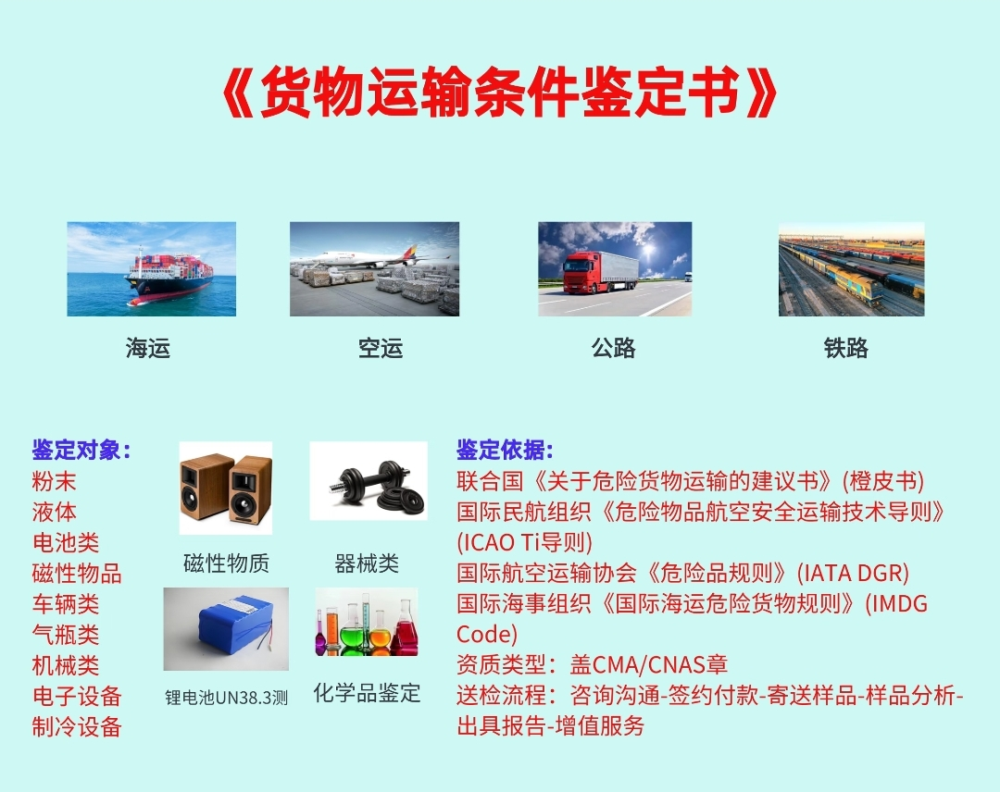

什么是货物运输条件鉴定书？
货物运输条件鉴定书是由具备 CMA/CNAS 资质的专业机构出具的权威文件，依据联合国及国际运输组织相关法规，对货物在运输过程中的危险性进行鉴定和分类。它是货物通过空运、海运、公路、铁路等方式运输时的必备文件，确保货物在运输链条中的安全合规。
🛳️ 海运
✈️ 空运
🚛 公路
🚂 铁路
- 海运：依据 IMDG Code（国际海运危险货物规则），评定货物是否属于海运危险品及危险等级。
- 空运：依据 IATA DGR（国际航空运输协会危险品规则）和 ICAO TI 导则，是最严格的运输方式，对锂电池、粉末、液体等有特殊要求。
- 公路运输：依据 ADR（欧洲国际公路运输危险货物协定）或国内相关法规，适用于陆路运输的危险品鉴定。
- 铁路运输：依据 RID（国际铁路运输危险货物规则），适用于铁路货运的危险品分类。
💡 提示：不同运输方式有各自的法规标准，同一货物在不同运输方式下的鉴定结果可能不同。建议根据实际运输方式选择对应的鉴定服务。
粉末液体
电池类磁性物品
车辆类气瓶类
机械类电子设备
制冷设备器械类
化学品
- 粉末类：化工粉末、金属粉末、食品粉末等，需鉴定是否易燃、易爆或有毒害。
- 液体类：化工液体、油墨、涂料、香精等，需鉴定闪点、腐蚀性等指标。
- 电池类：锂电池（含 UN38.3 测试）、铅酸电池、镍氢电池等，需鉴定运输安全性。
- 磁性物品：磁铁、扬声器、电机等含磁性材料的产品，需进行磁性检测（空运要求磁场强度≤0.00525 高斯）。
- 车辆类：汽车、电动车、平衡车等含电池/燃油的车辆。
- 气瓶类：压缩气体、液化气体储罐等压力容器。
- 电子设备/机械/器械类：含电池、含油、含磁性部件的各类设备。
📌 注：锂电池产品需同时提供 UN38.3 测试报告 + 货物运输条件鉴定书 + MSDS，三者缺一不可。
- 联合国橙皮书：《关于危险货物运输的建议书 — 规章范本》，全球危险品运输的顶层法规依据。
- ICAO TI 导则：国际民航组织《危险物品航空安全运输技术导则》，规范航空危险品运输。
- IATA DGR：国际航空运输协会《危险品规则》，航空公司普遍遵循的操作标准，每年更新一次。
- IMDG Code：国际海事组织《国际海运危险货物规则》，海运危险品分类与包装的强制标准。
- ADR / RID：欧洲公路/铁路危险货物运输协定，适用于陆路运输。
💡 IATA DGR 每年更新，鉴定书有效期通常至当年 12 月 31 日，次年需重新办理。
- CMA（中国计量认证）：中国法定检测机构资质，出具的报告具有法律效力。鉴定书必须加盖 CMA 章方被国内认可。
- CNAS（中国合格评定国家认可）：国际互认的实验室认可资质，加盖 CNAS 章的报告可在 ILAC 成员国间互认。
- 民航局认可：空运鉴定书需由民航局认可的鉴定机构出具，方可被航空公司接受。
⚠️ 注意：选择鉴定机构时务必确认其具备 CMA/CNAS 双资质，否则出具的鉴定书可能不被航空公司或海关认可！
- 咨询沟通：提供产品信息（名称、成分、用途、运输方式），鉴定机构评估是否需要检测及检测项目。
- 签约付款：确认服务内容和费用，签订委托协议。
- 寄送样品：按鉴定机构要求准备样品并寄送。注意：样品需与出货产品一致。
- 样品分析：实验室依据相关标准进行检测分析，评定货物危险性分类。
- 出具报告：检测合格后，出具加盖 CMA/CNAS 章的货物运输条件鉴定书。
- 增值服务：协助解读鉴定结果，指导包装标识，解答运输合规问题。

- 鉴定书有效期：通常为当年有效，有效期至当年 12 月 31 日。次年需重新办理。
- 法规更新：IATA DGR 每年 1 月发布新版，鉴定标准可能随之调整。
- 产品变更：产品配方、成分、包装等发生变更时，需重新鉴定。
⚠️ 每年必须更新！使用过期的鉴定书将导致货物被海关扣押或航空公司拒运，造成严重损失。
Q：什么情况下需要办理货物运输条件鉴定书？
A：化工品（粉末、液体、气体）、电池产品、含磁性材料的产品、含有油/燃料的设备等，在空运、海运前通常都需要办理。具体可咨询鉴定机构。
Q：MSDS 和货物运输条件鉴定书有什么区别？
A：MSDS（化学品安全技术说明书）是生产商提供的化学品成分与安全信息文件；货物运输条件鉴定书是第三方检测机构出具的运输危险性鉴定文件。二者用途不同，不能互相替代。
Q：同一产品不同运输方式需要分别鉴定吗？
A：一份鉴定书通常可涵盖多种运输方式。申请时需明确告知所需运输方式（空运/海运/公路/铁路），鉴定机构会按相应标准进行评定。
Q：鉴定周期需要多久？
A：常规样品 3-5 个工作日可出报告；特殊样品（如爆炸品、放射性物质）周期较长，需提前咨询确认。
📱 微信朋友圈分享
点击右上角 ··· 选择「分享到朋友圈」，即可将本指南分享给好友。
需要办理货物运输条件鉴定？
通跃检测为您提供一站式鉴定服务：
👤 Mindy：mindy.liu@nbth-ha.com
👤 陆先生：yueping@nbty-ha.com